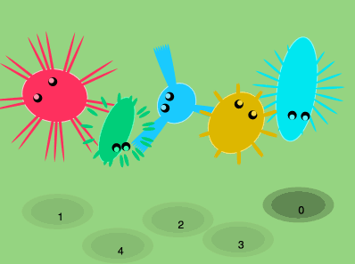
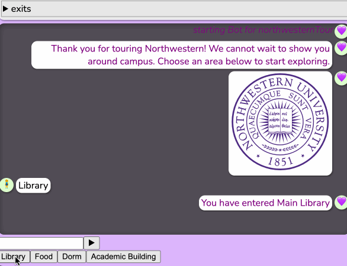

Hello! Welcome to my website.
Here are a few projects I have been working on recently:
This generative space includes different insects bouncing up and down There are 5 sliders that control different aspects of the insect, along with 5 set landmarks that the user can choose. Click on the gif to visit to the project!
This is an interactive chatbot that the user can "talk" to. It is Northwestern themed, so the user can go through various libraries, food places, dorms, and academic buildings throughout the tour. Click on the gif to visit to the project!

Both of these projects were created for a class I am taking called COMP_SCI 396: Generative Methods.
If you would like to read more about this class, check out this link!